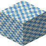

#minecraft:dampens_vibrations
物品标签 · 36 个已收录成员
标签成员 (36)
 牦牛毛块
牦牛毛块environmental:yak_hair_block
 牦牛毛地毯
牦牛毛地毯environmental:yak_hair_rug

花纹羊毛brewery:patterned_wool
 白色羊毛
白色羊毛minecraft:white_wool
 橙色羊毛
橙色羊毛minecraft:orange_wool
 品红色羊毛
品红色羊毛minecraft:magenta_wool
 淡蓝色羊毛
淡蓝色羊毛minecraft:light_blue_wool
 黄色羊毛
黄色羊毛minecraft:yellow_wool
 黄绿色羊毛
黄绿色羊毛minecraft:lime_wool
 粉红色羊毛
粉红色羊毛minecraft:pink_wool
 灰色羊毛
灰色羊毛minecraft:gray_wool
 淡灰色羊毛
淡灰色羊毛minecraft:light_gray_wool
 青色羊毛
青色羊毛minecraft:cyan_wool
 紫色羊毛
紫色羊毛minecraft:purple_wool
 蓝色羊毛
蓝色羊毛minecraft:blue_wool
 棕色羊毛
棕色羊毛minecraft:brown_wool
 绿色羊毛
绿色羊毛minecraft:green_wool
 红色羊毛
红色羊毛minecraft:red_wool
 黑色羊毛
黑色羊毛minecraft:black_wool
 brewery:patterned_carpet
brewery:patterned_carpetbrewery:patterned_carpet
 白色地毯
白色地毯minecraft:white_carpet
 橙色地毯
橙色地毯minecraft:orange_carpet
 品红色地毯
品红色地毯minecraft:magenta_carpet
 淡蓝色地毯
淡蓝色地毯minecraft:light_blue_carpet
 黄色地毯
黄色地毯minecraft:yellow_carpet
 黄绿色地毯
黄绿色地毯minecraft:lime_carpet
 粉红色地毯
粉红色地毯minecraft:pink_carpet
 灰色地毯
灰色地毯minecraft:gray_carpet
 淡灰色地毯
淡灰色地毯minecraft:light_gray_carpet
 青色地毯
青色地毯minecraft:cyan_carpet
 紫色地毯
紫色地毯minecraft:purple_carpet
 蓝色地毯
蓝色地毯minecraft:blue_carpet
 棕色地毯
棕色地毯minecraft:brown_carpet
 绿色地毯
绿色地毯minecraft:green_carpet
 红色地毯
红色地毯minecraft:red_carpet
 黑色地毯
黑色地毯minecraft:black_carpet
使用该标签的配方
无